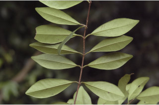
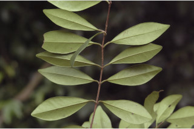
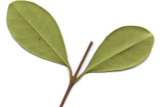
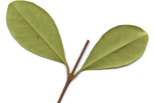
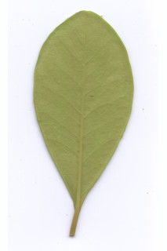
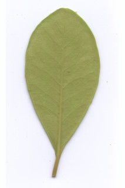

Small trees up to 7 m tall.
7 ಮೀ. ಎತ್ತರದವರೆಗಿನ ಸಣ್ಣ ಮರಗಳು.
Small trees up to 7 m tall.
சிறியமரங்கள் 7 மீ. உயரம் வரை வளரக்கூடியது.
Bark greyish, irregularly large flaky.
ತೊಗಟೆ ಬೂದು ಬಣ್ಣದಲ್ಲಿದ್ದು ಅನಿಯತವಾಗಿ ದೊಡ್ಡ ಗಾತ್ರದ ಚಕ್ಕೆಯುಕ್ತವಾಗಿರುತ್ತವೆ.
Bark greyish, irregularly large flaky.
மரத்தின் பட்டை சாம்பல் நிறமானது, ஒழுங்கற்ற பெரிய செதில்களாக உதிருபவை.
Young branchlets terete, minutely fulvous pubescent.
ಎಳೆಯ ಕಿರುಕೊಂಬೆಗಳು ದುಂಡಾಗಿದ್ದು ನಸುಗೆಂಪು ಮಿಶ್ರಿತವಾದ ಸೂಕ್ಷ್ಮ ಮೃದುತುಪ್ಪಳದಿಂದ ಕೂಡಿರುತ್ತವೆ.
Young branchlets terete, minutely fulvous pubescent.
சிறியநுனிக்கிளைகள் குறுக்குவெட்டுத் தோற்றத்தில் வளையமானது, சிறிய உரோமங்களுடையது.
Leaves simple, opposite, decussate; petiole 0.8-1.2 cm long, canaliculate, pubescent when young; lamina 3.5-7.5 (-10) x 1-3 cm, obovate - oblanceolate, sometimes elliptic, apex obtuse, base cuneate or attenuate, margin revolute, coriaceous, minutely fulvous pubescent when young and later glabrous, pellucid gland dotted; midrib canaliculate; secondary_nerves not prominent, 6-10 pairs; intramarginal nerve present; tertiary_nerves obscure.
ಎಲೆಗಳು ಸರಳವಾಗಿದ್ದು ಅಭಿಮುಖವಾಗಿ ಜೋಡನೆಗೊಂಡಿದ್ದು ಕಾಂಡದ ಎರಡೂ ಕಡೆ ಎದುರು ಬದರಿನ ಲಂಬ ಸಾಲಿನಲ್ಲಿರುತ್ತವೆ; ತೊಟ್ಟುಗಳು 0.8 – 1.2 ಸೆಂ.ಮೀ. ಉದ್ದವಿದ್ದು ಕಾಲುವೆಗೆರೆ ಸಮೇತವಿರುತ್ತವೆ ಮತ್ತು ಎಳೆಯದಾಗಿದ್ದಾಗ ಮೃದುತುಪ್ಪಳದಿಂದ ಕೂಡಿರುತ್ತವೆ;ಪತ್ರಗಳು 3.5 – 7.5(-10) X1 – 3 ಸೆಂ.ಮೀ.ವರೆಗಿನ ಗಾತ್ರವಿದ್ದು ಬುಗುರಿ – ಬುಗುರಿಭರ್ಜಿ, ಕೆಲವು ವೇಳೆ ಅಂಡವೃತ್ತಾಕೃತಿಯ ಆಕಾರ ಹೊಂದಿದ್ದು, ಚೂಪಲ್ಲದ ತುದಿ,ಬೆಣೆಯಾಕಾರದ ಅಥವಾ ಒಳಬಾಗಿದ ಬುಡ,ಹಿಂಸುರುಳಿಯಾದ ಅಂಚು, ತೊಗಲನ್ನೋಲುವ ಮೇಲ್ಮೈ ಹೊಂದಿದ್ದು ಎಳೆಯದಾಗಿದ್ದಾಗ ನಸುಗೆಂಪು ಮಿಶ್ರಿತವಾದ ಸೂಕ್ಷ್ಮ ಮೃದುಪ್ಪಳದಿಂದ ಕೂಡಿದ್ದು ನಂತರ ರೋಮರಹಿತವಾಗಿರುತ್ತವೆ, ಹಾಗೂ ಪ್ರಕಾಶ ಬೇಧ್ಯ ಚುಕ್ಕೆ ರೂಪದ ರಸಗ್ರಂಥಿಗಳಿಂದ ಕೂಡಿರುತ್ತವೆ;ಮಧ್ಯ ನಾಳ ಕಾಲುವೆಗೆರೆ ಸಮೇತವಿರುತ್ತದೆ; ಎರಡನೇ ದರ್ಜೆಯ ನಾಳಗಳು 6 -10 ಜೋಡಿಗಳಿದ್ದು ಪ್ರಮುಖವಾಗಿರುವುದಿಲ್ಲ; ಅಂತರ ಅಂಚಿನ ನಾಳಗಳು ಇರುತ್ತವೆ;ಮೂರನೇ ದರ್ಜೆಯ ನಾಳಗಳು ಅಸ್ಪಷ್ಟವಾಗಿರುತ್ತವೆ.
Leaves simple, opposite, decussate; petiole 0.8-1.2 cm long, canaliculate, pubescent when young; lamina 3.5-7.5 (-10) x 1-3 cm, obovate - oblanceolate, sometimes elliptic, apex obtuse, base cuneate or attenuate, margin revolute, coriaceous, minutely fulvous pubescent when young and later glabrous, pellucid gland dotted; midrib canaliculate; secondary_nerves not prominent, 6-10 pairs; intramarginal nerve present; tertiary_nerves obscure.
இலைகள் தனித்தவை, எதிரடுக்கமானவை, குறுக்குமறுக்கானவை; இலைக்காம்பு 0.8-1.2 செ.மீ. நீளமானது, குறுக்குவெட்டுத் தோற்றத்தில் கேனாலிகுலேட், இளம்பருவத்தில் உரோமங்களுடையது; இலை அலகு 3.5-7.5 (-10) X 1-3 செ.மீ., தலைகீழ் முட்டை-தலைகீழ் ஈட்டி வடிவானது, சிலசமயங்களில் நீள்வட்ட வடிவானது, அலகின் நுனி மெட்டையானது, அலகின் தளம் ஆப்பு வடிவானது அல்லது அட்டனுவேட், அலகின் விளிம்பு பின்புறம் வளைந்து (ரெவலுட்) காணப்படும், கோரியேசியஸ், இளம்பருவத்தில் சிறிய உரோமங்களுடையது மற்றும் முதிரும் போது உரோமங்களற்றது, ஒளிபுகும் சுரப்பி புள்ளிகளுடையது; மையநரம்பு மேற்புறத்தில் அலகின் பரப்பைவிட பள்ளமானது; இரண்டாம் நிலை நரம்புகள் தெளிவற்றது, 6-10 ஜோடிகள்; விளிம்பு நரம்பு (இண்ட்ராமார்ஜினல் நரம்பு) கொண்டது; மூன்றாம் நிலை நரம்புகள் கண்களுக்கு புலப்படாது.
Flowers white, in axillary pairs on short peduncle; pedicel ca. 2.5 cm long.
ಹೂಗಳುಕಿರು ಗಾತ್ರದ ವೃಂತದ ಮೇಲೆ ಅಕ್ಷಾಕಂಕುಳಿನಲ್ಲಿನಲ್ಲಿ ಜೋಡಿಯಾಗಿರುತ್ತವೆ; ಹೂ ತೊಟ್ಟುಗಳು ಅಂದಾಜು 2.5 ಸೆಂ.ಮೀ. ಉದ್ದವಿರುತ್ತವೆ.
Flowers white, in axillary pairs on short peduncle; pedicel ca. 2.5 cm long.
மலர்கள் வெள்ளை நிறமானது, ஒர் ஜோடிகள், இலைக்கோணங்களில் காணப்படுபவை, குட்டையான மஞ்சரிக்காம்பு; மலர்காம்பு 2.5 செ.மீ. நீளமானது.
Berry, ellipsoid or globose, crowned with calyx lobes, fulvous tomentose; seeds 1-2.
ಬೆರ್ರಿ ಫಲಗಳು ಅಂಡವೃತ್ತ ಅಥವಾ ಗೋಳಾಕಾರದಲ್ಲಿದ್ದು ಮುಕುಟದಲ್ಲಿ ಪುಷ್ಪಪಾತ್ರೆಯ ಎಸಳುಗಳನ್ನು ಹೊಂದಿರುತ್ತವೆ ಹಾಗೂ ನಸುಗೆಂಪು ಮಿಶ್ರಿತವಾದ ಮೃದುಪ್ಪಳದಿಂದ ಕೂಡಿರುತ್ತವೆ;ಬೀಜ ಒಂದರಿಂದ ಎರಡು.
Berry, ellipsoid or globose, crowned with calyx lobes, fulvous tomentose; seeds 1-2.
முழுச்சதைகனி (பெர்ரி), நீள்வட்ட வடிவானது அல்லது கோளவடிவானது, நிரந்தரமான புல்லி இதழ்களுடையவை, உரோமங்களுடையது; விதைகள் 1-2.
 

 


 
